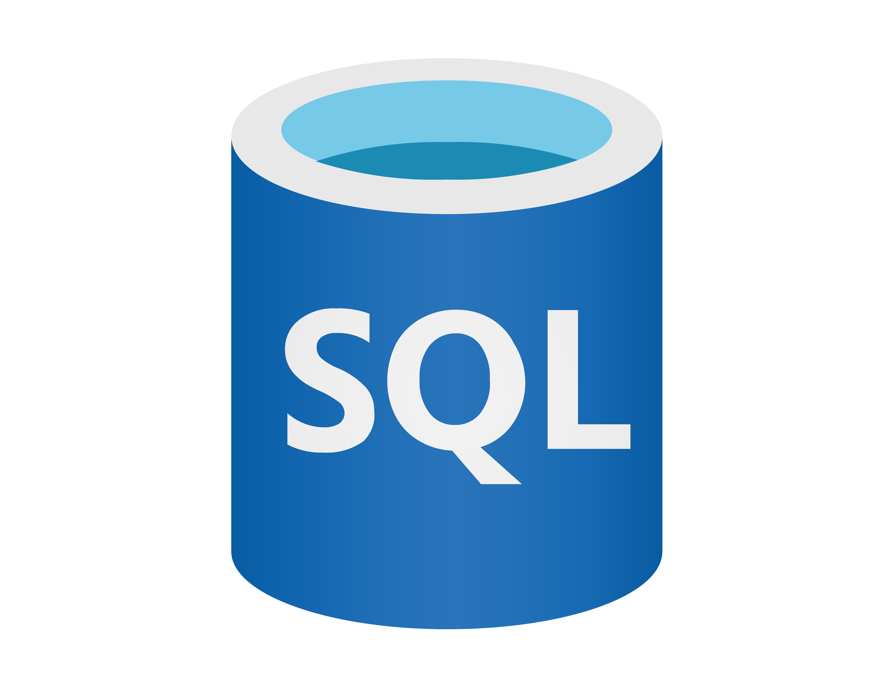
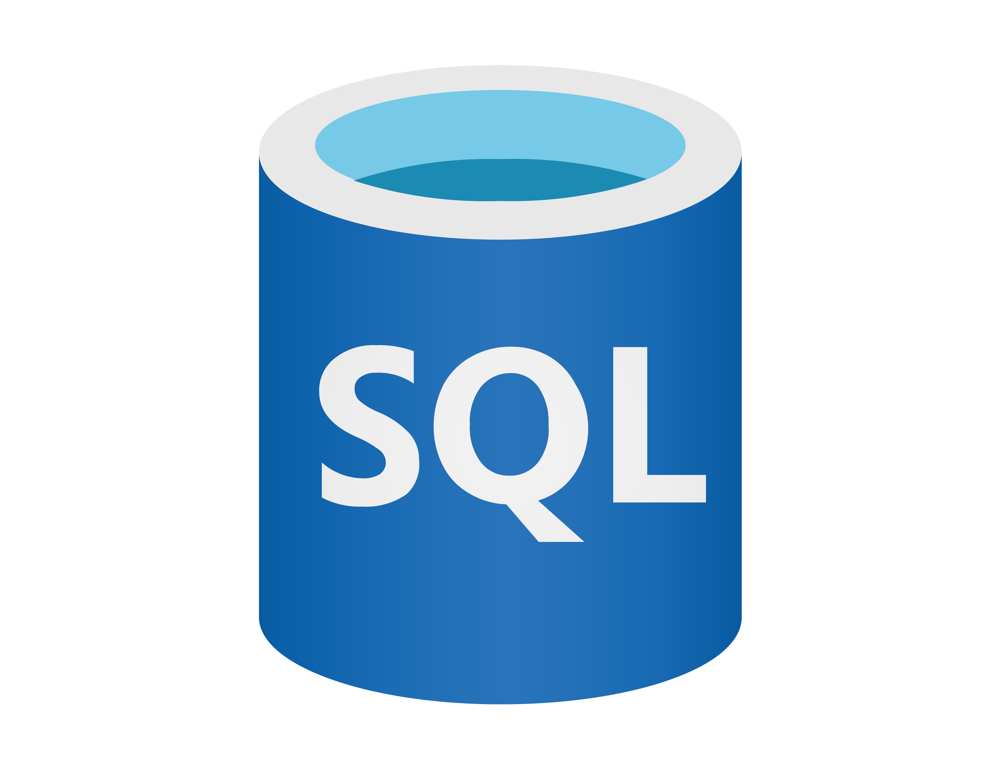

Sobre mim

Sou Frederico Karklin, engenheiro mecânico com MBA em Gestão de Projetos e cientista de dados em formação. Após oito anos atuando com melhoria contínua e resolução de problemas em processos industriais, liderando iniciativas orientadas por dados, realizei minha transição para a área de Ciência de Dados.
Atualmente, curso Mestrado em Computação Aplicada na UTFPR, com foco em machine learning e aplicações práticas de inteligência artificial para diversos setores.
 Aqui você pode ver meu CV.
Aqui você pode ver meu CV.
 
